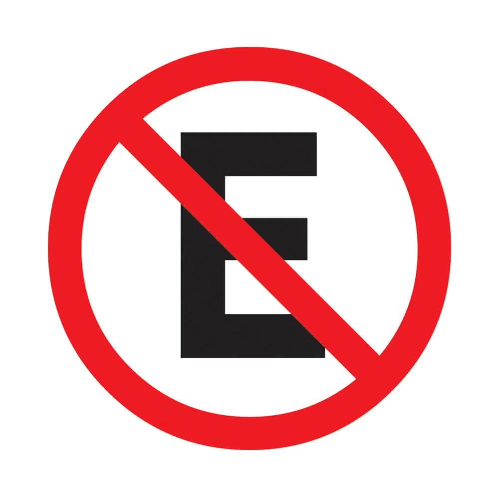
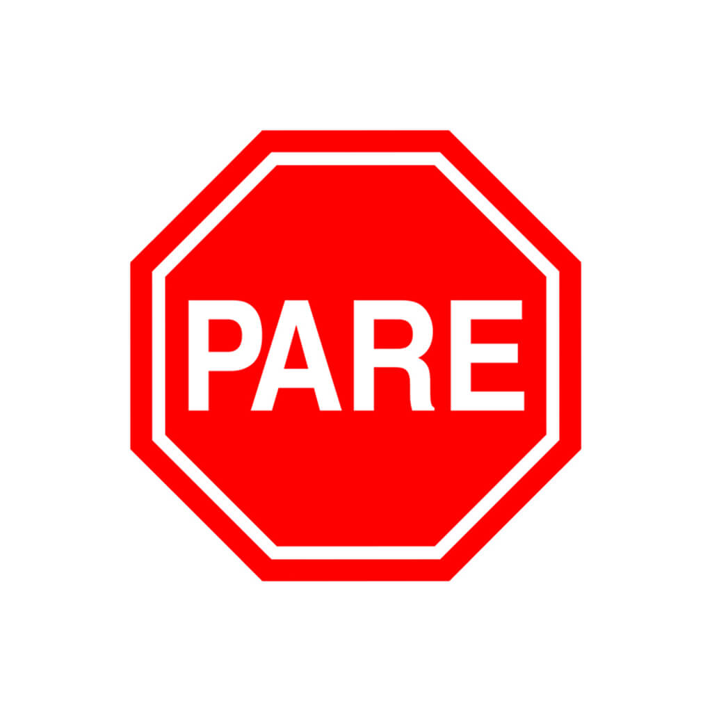
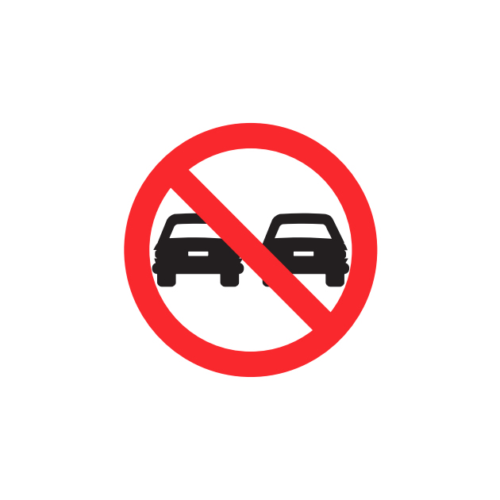
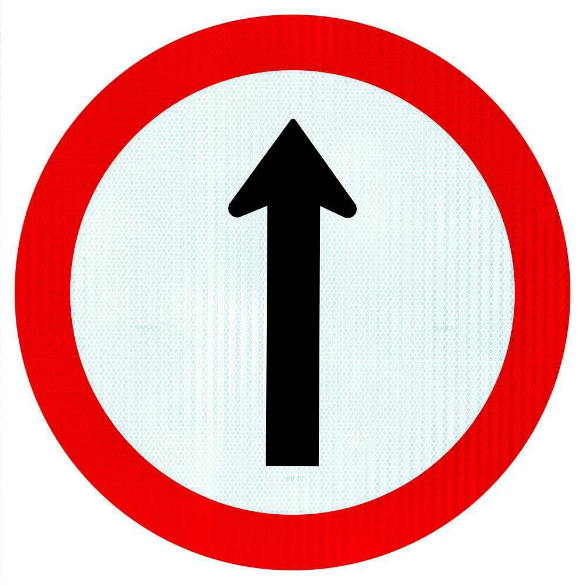

5 regras de bom comportamento:
- Tratar o próximo da mesma forma que deseja ser tratado;
- Esperar com paciência;
- Respeitar o pensamento das outras pessoas;
- Dizer por favor e obrigado;
- Pedir desculpas.
Meus 5 emojis favoritos
- 😴 Com sono;
- 😂 Rosto sorridente com olhos fechados;
- 🤣 Rosto mais sorridente com olhos fechados;
- 😊 Rosto sorridente com olhos sorridentes;
- ❤ Coração.
Placas de trânsito e seus significados
-  Proibido Estacionar;
-  Pare;
-  Proibido Ultrapassar;
-  Siga em frente;
 Vire a direita.
Vire a direita.
The Fellowship of the Ring
- The Ring sets out/The first journey
- A Long-expected Party
- The Shadow of the Past
- Three is Company
- A Short Cut to Mushrooms
- A Conspiracy Unmasked
- The Old Forest
- In the House of Tom Bombadil
- Fog on the Barrow-downs
- At the Sign of the Prancing Pony
- Strider — Strider
- A Knife in the Dark
- Flight to the Ford
- The Ring goes south/the journey of the nine companions
- Many Meetings
- The Council of Elrond
- The Ring goes South
- A Journey in the Dark
- The Bridge of Khazad-dûm
- Lothlórien
- The Mirror of Galadriel
- Farewell to Lórien
- The Great River
- The Breaking of the Fellowship